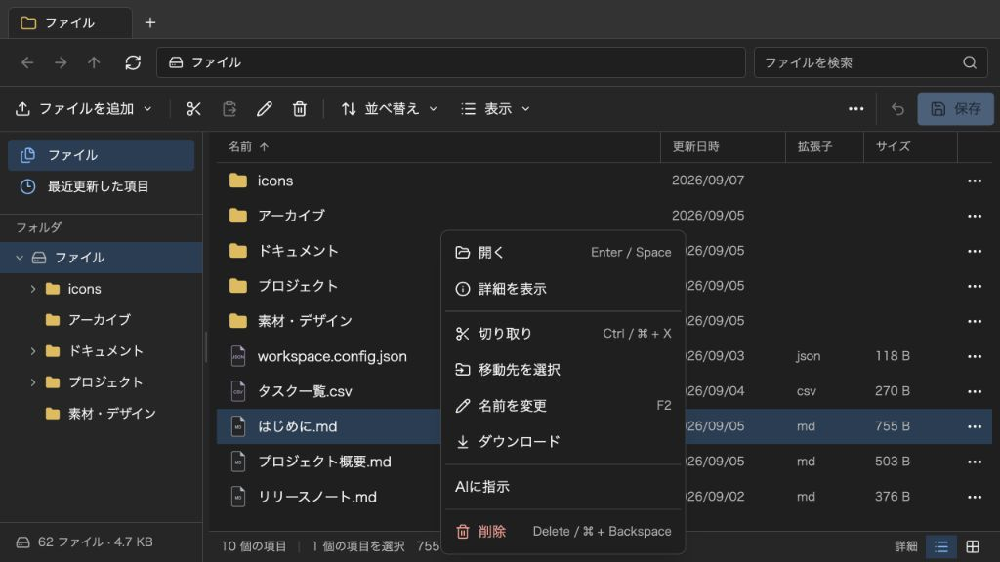

@likex/explorer
右クリックメニュー
条件に合うメニューを追加し、非同期処理の結果を下書きへ反映できます。
画面例を見る ↓getContextMenuItems で、ファイル・フォルダ・一覧の空白に条件付きのメニューを追加できます。ファイル・フォルダでは「削除」の直前に、削除が非表示の場合や一覧の空白では既存項目の後に区切って表示します。ui={{ contextMenu: false }} は追加項目も非表示にします。
一覧の余白には新規作成・アップロードと「貼り付け」を表示します。コピーまたは移動が有効なら貼り付けを表示し、対応する内部クリップボードが空の場合は無効にします。貼り付け先はメニューを開いたフォルダに固定し、通常の編集許可とコピー・移動処理を共用します。検索や仮想一覧では貼り付けを表示しません。
サイドバーの保存済みフォルダも、一覧と同じ開く・詳細・コピー・移動・名前変更・お気に入り・ダウンロード・削除メニューと追加項目を利用できます。サイドバーからは右クリックしたフォルダだけを対象にし、一覧側の複数選択は巻き込みません。名前変更はツリー内の入力欄で行い、一覧の編集と同じ検証・編集許可へ接続します。処理中の仮フォルダには操作メニューを出しません。入力欄や選択済みのテキストはブラウザーの右クリックを維持します。
import { Explorer, type ExplorerContextMenuProvider } from "@likex/explorer";
const getContextMenuItems: ExplorerContextMenuProvider = context => {
if (context.target.kind !== "entry" || context.target.entry.kind !== "file") return [];
const file = context.target.entry;
if (!/^(audio|video)\//.test(file.mime)) return [];
return [{
id: "transcribe",
label: "文字起こし",
disabled: context.readOnly || !context.features.uploadFiles,
async onSelect(context, { signal }) {
// APIや認証、ダイアログは利用側が担当します。
const response = await fetch("/api/transcribe", {
method: "POST",
body: JSON.stringify({ fileId: file.id }),
headers: { "Content-Type": "application/json" },
signal,
});
if (!response.ok) throw new Error("文字起こしに失敗しました");
const text = await response.text();
return {
description: `${file.path} と同じフォルダに文字起こしを追加`,
change: {
type: "upload",
parentId: file.parent,
files: [new File([text], `${file.name}.txt`, { type: "text/plain" })],
},
};
},
}];
};
// initialEntries、saveは利用側が用意します。
<Explorer initialEntries={initialEntries} onSave={save}
getContextMenuItems={getContextMenuItems} contextMenuExecutionMode="block" />;上記APIは利用側で実装するサンプルです。ライブラリ自体にAI通信やアップロード先の認証は含まれません。生成した File は通常のアップロードと同じようにクライアントの下書きへ追加され、保存するまで外部ストレージには反映しません。拡張子・サイズ制限、同名ファイルの上書き確認、編集許可、変更イベントを通常の操作と共用します。
共通の実行モード#
ContextMenuExecutionMode、メニュー項目と処理結果の型、非同期実行の管理はCoreで共通化しています。
contextMenuExecutionMode | 処理中 | 完了後 |
|---|---|---|
block（既定） | 全タブ・同じワークスペースの別ウィンドウで変更・保存・更新・破棄を禁止。フォルダ移動・選択・スクロールは可能 | 取得した編集許可を確認し、結果を反映 |
confirm | データ変更を許可 | 結果の説明と反映先を確認してから反映。キャンセルでは反映しない |
reject-if-changed | データ変更を許可 | 処理開始後に下書きが変更されていれば反映せず、再実行を案内 |
最終反映中はどのモードでも変更を一時的に禁止します。同じワークスペースで並行して実行できる追加メニューは1件です。操作対象はメニューを開いた時に固定し、途中の選択変更やフォルダ移動で反映先を変えません。対象のファイルやフォルダがなくなれば反映しません。
confirm は開始時のIDを保った対象へ反映します。処理中に対象が移動・名前変更されてもIDで追跡します。説明には description で元のパスと反映内容を明示してください。確認中に対象が削除された場合も反映直前に再検証します。保存・再読み込み・破棄で編集セッションが終了した場合や、実行元のビューを閉じた場合は処理をキャンセルします。
contextの情報#
| フィールド | 内容 |
|---|---|
target | { kind: "entry", entry: ExplorerItemInfo } または { kind: "background", parentId: string | null }。検索・最近更新などの仮想一覧では空白の追加先が null になることがあります。 |
selectedEntries | メニューを開いた時点の選択項目。選択済み項目の右クリックは複数選択を保持し、それ以外は右クリック対象のみ。 |
location | 開いた一覧のID、パス、表示名など。 |
tabId / windowId | 操作を開始したタブとウィンドウ。 |
readOnly / features | 開いた時の読み取り専用状態と解決済み機能設定。反映時にも現在の設定を検証します。 |
getEntries() | 開いた時点の全項目をコピーして取得。ExplorerItemInfo はID、パス、名前、拡張子、MIME、サイズ、日時、内容の参照先などを含みます。 |
readFile(entryId) | 開いた時のファイル内容を Blob として取得。既存ファイルは親の readFile を利用します。外部ストレージの内容の版管理は利用側の責任です。 |
container | 実行元のExplorerのDOM要素。親の入力ダイアログを createPortal で表示する際に使えます。別ウィンドウでは container?.ownerDocument がその文書です。 |
メニューを組み立てる関数は同期です。条件に合わなければ [] を返します。項目は一意な id、表示する label、任意のReact icon、disabled、処理本体の onSelect を持ちます。通信・入力ダイアログなどは onSelect で行います。
利用側が開く入力ダイアログの見た目と余白は利用側で指定します。container 内に表示するとExplorerのスコープ付きCSSリセットの対象になるため、デモのようにダイアログの親クラスも含めたセレクタで余白を指定してください。処理結果を反映する組み込みの確認ダイアログはExplorerが描画します。
処理と反映を分ける#
onSelect(context, { requestId, signal }) は void または { change, description? } を返します。Promiseも利用できます。void は別の画面を開くなど、下書きを変更しない外部処理向けです。
親の入力ダイアログがキャンセルされた場合は throw new DOMException("キャンセル", "AbortError") とすると、成功・失敗とは区別して cancelled と通知します。
現在の変更プランは次の2種類です。
type ExplorerContextMenuChange =
| { type: "upload"; files: readonly File[]; parentId: string }
| { type: "action"; action: ExplorerAction };
// 既存の操作へ委譲する例
return { change: { type: "action", action: {
action: "rename", ids: [file.id], name: "新しい名前.txt",
} } };ハンドラー内で直接下書きや親の保存済みデータを書き換えず、変更プランを返してください。そうすることで確認前の反映を防ぎ、既存の編集許可・検証を維持します。親が外部APIに対して行った変更を、キャンセル時に自動で取り消す機能はありません。
フッターに処理中の表示とキャンセル操作を出します。確認ダイアログは表示領域中央に表示し、Escape・背景クリックでも取り消せます。処理中のキャンセル、ビューの終了、成功・失敗で signal をabortし、遅れて完了した処理は反映しません。通信には signal を渡し、親のダイアログもabort時に閉じてください。
onEvent には type: "context-menu" と status: "start" | "confirmation-required" | "success" | "cancelled" | "error"、requestId、itemId、label、必要に応じて message を通知します。反映に伴う通常の change、upload、edit-mode イベントも発火します。
ここでのロックはクライアントのワークスペース内に限ります。別ユーザーによるDB更新は、親の onEditRequest と保存時の競合検証で管理します。
画面例
{kind=link}
